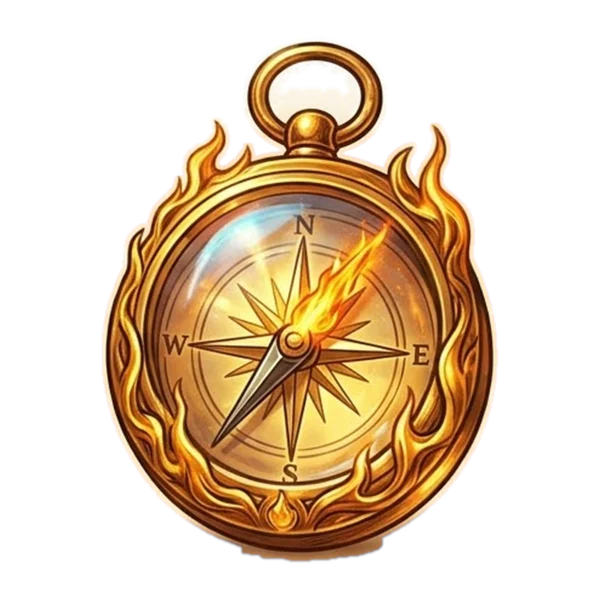
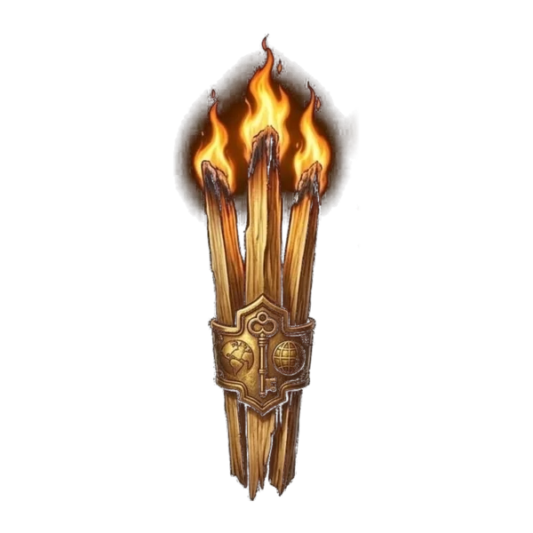

Специалисты и фрилансеры
Работаете на себя или в найме и самостоятельно ведёте направление? В блоке «Люди в маркетинге» можно представить собственную работу.

Дизайн-система · текущая версия · 11/11/2026
Получи свой Оскар
в маркетинге
Тёмная сцена и живой огонь, Dela Award / Involve / Golos Award, кнопки с бегущей рамкой и пламенем, прожиг на стыке секций. Гайд собран по текущим файлам сайта и проверен в браузере.
Это не заглушка и не концепт: страница описывает работающий сайт «Суровой премии» — пятнадцать секций главной, страницу жюри, партнёрскую форму и девять эффектов. Всё, что ниже, взято из site/css, site/js и живых вычисленных стилей.
Полный текст — DESIGN.md · переменные — tokens.css · рабочий CSS — index-bundle.css · логотип — logo.svg, живой стайлгайд — styleguide.html.
Живой стайлгайд — цвет, типографика, компоненты, сетка, эффекты.
01 · Палитра
Две палитры и один акцент. Тёмная сцена — основа: фон #080607, тёплый белый текст, тонкие линии. Бумага #ECE9E3 включается классом .section--soft и инвертирует токены для потомков. Оранжевый #F56624 — не «пятый цвет», а огонь: подписи, номера, пламя и свечение.
--groundфон страницы и сцены--scene-inkосновной текст--scene-mutedвторичный текст--control-surfacehover-подложка--action-borderрамка кнопок, фокус--brand-accentакцент, огонь, ссылки--fire-glowсвечение пламени--rule-strongрамки карточек--selectionвыделение текста--backdropзатемнение под модалкой--paperфон светлых секций--paper-raisedкарточки и поля--inkосновной текст--ink-softлид на бумаге--mutedвторичный текст--field-lineрамка поля--errorошибка формы--paper-rule-strongрамка карточкиПравило. В статике нет теней и цветных плашек: глубина — фон, рамки и canvas-свечение. Оранжевый на бумаге (#F56624 на #ECE9E3 — 2.55:1) годится только для декоративных 12-пиксельных подписей; смысловой текст на бумаге набирается --ink или --error. Исключения — свечение кнопки при наведении и градиент слогана.
02 · Типографика
Заголовки — Dela Award (Dela Gothic One), только 400 и всегда капс. Involve — подписи, кнопки, имена и лиды. Golos Award — основной текст и мелкие метки. Семь ступеней размера; всё остальное — исключения, которые нужно свести.
Суровая премия
Сильная работа заслуживает признания
Кто может участвовать
Работаете самостоятельно, развиваете агентство или отвечаете за маркетинг внутри компании?
Основной текст — Golos Award 16px с межстрочным 1.45–1.65. Он же в карточках, списках, FAQ и подписях. Кнопки набраны Involve, а не Golos.
Этапы премии
.small — Golos 400, 14px, 1.55: примечания и юридический текст.
| Ступень | Токен | Значение | Где |
|---|---|---|---|
| 12 | --fs-micro | 12px | подписи, номера, роли, eyebrow |
| 14 | --fs-small | 14px | мелкий текст, навигация, примечания |
| 16 | --fs-body | 16px | основной текст, кнопки, h4 |
| 20 | --fs-lead | 20px | h3, имена, даты, FAQ, лид |
| 24 | --fs-prose | 24px | крупный вводный текст, номера шагов |
| h2 | --fs-h2 | clamp(28px, 3.6vw, 40px) | заголовки секций, цена |
| h1 | --fs-h1 | clamp(40px, 6vw, 60.48px) | заголовок страницы |
| Семейство | Роль | Начертания |
|---|---|---|
| Bounded Award | имена жюри (.jury-card__name) | 900 |
| Oswald | тарифные постеры (tariffs.css) | 700 |
| JetBrains Mono | служебные подписи постеров, код | 300–800 |
Исключения вне шкалы: h1 34px на ≤360px; h1 жюри clamp(30px, 8.4vw, 60.48px); .prose clamp(20px, 2vw, 24px); слоган .hero__sub clamp(18px, 5.9vw, 50.8px). Это ручные подгонки, а не новые ступени — при следующей правке их надо свести.
03 · Кнопки
Общий каркас — высота 54, рамка 1px, радиус 4px, прозрачный фон. Дальше роль меняет только обводку и эффект: бегущий блик, сияющая коническая рамка или пламя по периметру. Наведите курсор — все эффекты живые.
Внутри .section--soft токены меняются на бумажные: рамка становится --ink, блик — тёмным, фон hover — #25292E14. Классы кнопок не дублируются.
| Класс | Размер | Рамка | Радиус | Шрифт | Эффект |
|---|---|---|---|---|---|
.btn | 244×54, padding 15/26 | 1px --action-border | 4px | Involve 16 | canvas-блик по рамке, 4 с/оборот |
.btn--sm | 44px, padding 0/20 | та же | 4px | Involve 14 | тот же блик |
.btn--ghost | как .btn | 45% currentColor | 4px | Involve 16 | без блика; фон 50% сцены |
.shiny-btn--site | 244×54, padding 15/26 | коническая, 3 с | 4px | Involve 16 | зерно, блик, свечение снизу |
.shiny-btn--outline | как .shiny-btn--site | + outline 1px, offset 3 | 4px | Involve 16 | контур для первого экрана |
Про радиус. Базовый .shiny-btn — 32px, но на сайте его перекрывает .shiny-btn--site { border-radius: var(--radius) } из fire-buttons.css, то есть 4px. В гайде и на сайте — 4px. Про огонь. Пламя рисует fire-button.js на canvas 280×280 вокруг кнопки; оно появляется при приближении курсора, только на устройствах с мышью и не включается на слабом железе и при prefers-reduced-motion.
04 · Компоненты
Компоненты собраны на одном каркасе: рамка 1px, радиус 4px, отступы от --edge. Внутри бумажной секции они автоматически инвертируются, поэтому один и тот же класс работает на обоих фонах.
Sticky, высота 96px, фон rgba(8,6,7,.94), нижняя линия --rule. Меню — Golos 500, 14px, трекинг .08em, капс; hover — оранжевый и линия ::after. На ≤980px меню уходит в оверлей с бургером 44×44.
Работаете на себя или в найме и самостоятельно ведёте направление? В блоке «Люди в маркетинге» можно представить собственную работу.

Представьте на конкурс проект, которым гордитесь. Покажите, что стоит за итоговыми цифрами: идею, решения и вклад в результат.

Рамка 2px собирается из двух слоёв ::before/::after; правый верхний угол срезан на 72×60, радиус 4px, padding 28. На бумаге поверхность карточки — --paper-raised, на сцене — --ground.
Нативный <details> с кастомным summary: рамка 1px, радиус 4px, padding 24/28, оранжевая линия-протяжка по нижнему краю при раскрытии. Круглый переключатель 26px, плюс из двух полос. На мобильном группы свёрнуты по умолчанию.
Поле 52px, радиус 4px, фон --paper-raised, рамка --field-line; focus — --ink, ошибка — --error. Чекбокс 20px с кастомной галочкой. Эти же поля использует партнёрская форма в модальном окне.
К участию рассматриваются проекты, реализованные в 2025–2026 годах. Если проект старше, но результаты и коммуникация продолжались в 2025–2026, напишите команде — разберёмся вместе.
Описание задачи, вашу работу и подтверждённые результаты. Материалы зависят от номинации: скриншоты, метрики, ссылки на публикации.
Summary — Involve 20, padding 22/48/22, плюс 24px оранжевый. Раскрытие анимируется в app.js без библиотек; при prefers-reduced-motion открывается сразу.
05 · Анимации
Огонь — не украшение, а материал системы: он живёт в фоне, в кнопках, в номинациях, в заставке и в прожиге между секциями. Ниже — живые демо, а не картинки. Прокрутите страницу: границы секций прожигаются настоящим scroll-burn.
typewriter.cssbike-loader.cssnominations-fire.cssscroll-burn.jsКромка прожига живёт на стыке тёмной сцены и бумаги — прямо на границах этого гайда
| Файл | Что делает | Где |
|---|---|---|
fire.css + fire.js | фиксированный фон-сцена: видео огня 1440/540, искры canvas, пауза вне экрана | герой и все тёмные секции |
intro.css + intro.js | заставка: огонь внутри логотипа и слогана, затем передаёт ролик фону | первый вход на главную |
scroll-burn.css + scroll-burn.js | прожиг на стыке секций: Chrome — SVG-фильтр, Safari — SVG-путь с CSS-заливкой | все стыки тёмного и бумаги |
star-border.js + style.css | бегущий блик по рамке .btn, хвост, искры, вспышка по клику | все .btn |
shiny-button.css | вращающаяся коническая рамка, зерно и свечение | .shiny-btn--site |
fire-button.css + fire-button.js | мягкое пламя по периметру при приближении курсора | CTA в номинациях и финале |
typewriter.css | печатная машинка в огненной палитре | «Как принять участие» |
bike-loader.css + anim-pause.js | велосипед-лоадер, пауза вне экрана и в скрытой вкладке | «Организаторы» |
nominations-fire.css | огненная анимация Uiverse у заголовка номинаций | секция «Номинации» |
Высоту, амплитуду кромки, цвет заливки, направление и различия Chrome/Safari меняем только по согласованию. Мобильная кромка не отключается и не скрывается. На стыке кромки и секций не должно быть видимых рамок, чёрных или белых линий и швов. При резком прыжке по якорю переход скрывается на 180 мс — это .is-burn-jumping.
Пауза и слабое железо. anim-pause.js останавливает CSS-анимации вне экрана и в неактивной вкладке. fire-button.js не запускается на слабом устройстве (решает замер скорости, а не число ядер) и при prefers-reduced-motion. scroll-burn.js умеет деградировать до статичной кромки.
06 · Сетка
Колонка 1040px, один отступ от края clamp(24px, 4vw, 72px), рамки 1px и радиус 4px. Секции дают вертикальный ритм, шапка — 96px, подвал — 48–72px сверху.
| Параметр | Значение | Токен / класс |
|---|---|---|
| Колонка | 1040px + 2 × edge, по центру | --page-col, .wrap |
| Отступ от края | clamp(24px, 4vw, 72px); ≤599 — 24px, ≤360 — 20px | --edge |
| Секция | padding clamp(64px, 7.5vw, 108px) 0; узкая — 48–72px | .section, .section--tight |
| Шапка | sticky, min-height 96px, фон rgba(8,6,7,.94) | .header |
| Кнопки | 244×54; компактная 44px; радиус 4px | --action-w, --action-h, --radius |
| Радиусы | 4px — кнопки, карточки, поля; 2px — чекбокс; 50% — круглый переключатель; 40px — пилюля в подвале | --radius, --radius-pill |
| Тени | в статике нет; hover .btn — белое свечение, артефакты — оранжевое | style.css |
| Брейкпоинты | 1399 · 1100 · 980 · 900 · 720 · 600 · 360 · 359 · 300 | @media |
| Условие | Изменения |
|---|---|
| ≤1100 | навигация 12px; часть декоративных артефактов уходит к краю |
| ≤980 | меню в оверлей, бургер 44×44; навигация 14px |
| ≤900 | сетки в одну колонку; прожиг остаётся; фон «О премии» становится ровным |
| ≤600 | секция 56px; номера шагов 20px; FAQ и таймлайн 16/20px; подвал 12px |
| ≤360 | h1 34px; кнопки без min-width; логотип 24px |
| по высоте | max-height 780/760/600 сжимает вертикальный ритм героя |
Правило. Новый отступ или радиус сначала появляется в токенах и в DESIGN.md, потом в компоненте. Сырые значения в вёрстке — только для одноразовых правок, и их нужно перечислять в разделе исключений.
07 · Доступность
Система не ломает клавиатуру: :focus-visible — 2px --action-border с отступом 3px. Все canvas-эффекты декоративные и помечены aria-hidden; у кнопок-ссылок есть понятный текст; заголовки идут по порядку.
| Пара | Коэффициент | Вывод |
|---|---|---|
| #F5F0EB на #080607 | 17.84:1 | AAA |
| #FFFFFF на #080607 | 20.20:1 | AAA |
| #C8C2BC на #080607 | 11.45:1 | AAA |
| #F56624 на #080607 | 6.55:1 | AA / AAA для крупного |
| #FF7B39 на #080607 | 7.84:1 | AAA |
| #25292E на #ECE9E3 | 12.08:1 | AAA |
| #4A4D48 на #ECE9E3 | 7.08:1 | AAA |
| #A62C18 на #ECE9E3 | 5.79:1 | AA |
| #696B64 на #ECE9E3 | 4.46:1 | AA только для 18px+; плейсхолдер — на грани |
| #F56624 на #ECE9E3 | 2.55:1 | только декор; смысловой текст — --ink |
| #FF3838 на #ECE9E3 | 2.95:1 | только декоративная звёздочка |
Видимый фокус у кнопок, ссылок и полей; aria-hidden на canvas и декоративных SVG; осмысленный alt у логотипа и фото; нативные details для номинаций и FAQ; prefers-reduced-motion отключает блик, пламя, печатную машинку и прожиг; формы связаны с label, ошибки — с aria-invalid.
Кнопки с огнём не запускаются на слабом железе, а анимации ставятся на паузу вне экрана — это и про батарею, и про vestibular safety.
Не делать оранжевый смысловым текстом на бумаге; не убирать focus-visible; не отключать мобильную кромку прожига; не добавлять autoplay со звуком; не прятать кнопку «Пропустить» в заставке; проверять 360px, 900px, 1440px и клавиатуру. Для новых полей — --field-line ≥ 3:1 к фону, для текста — 4.5:1.
08 · Токены
tokens.css рядом — самодостаточный файл: шрифты, палитра, шкала, сетка, базовые кнопки и карточки. Полный рабочий CSS — css/index-bundle.css; он собран из 13 файлов текущего сайта.
/* сцена */
--ground: #080607;
--scene-ink: #F5F0EB;
--action-border: #C8C2BC;
--brand-accent: #F56624;
--fire-glow: #FF7B39;
/* бумага */
--paper: #ECE9E3;
--paper-raised: #F5F2EC;
--ink: #25292E;
--muted: #4A4D48;
--error: #A62C18;
/* сетка и шкала */
--edge: clamp(24px, 4vw, 72px);
--page-col: 1040px;
--action-w: 244px;
--action-h: 54px;
--radius: 4px;
--fs-micro: 12px; ... --fs-h1: clamp(40px, 6vw, 60.48px);
/* движение */
--ease: cubic-bezier(.22, 1, .36, 1);| Что | Где | Размер |
|---|---|---|
| Токены | site/css/tokens.css | 6 КБ |
| Основные стили | site/css/style.css | 63 КБ |
| Собранный CSS | site/css/index-bundle.css (13 файлов) | 130 КБ |
| Эффекты | site/js/fire.js, star-border.js, scroll-burn.js, fire-button.js, intro.js | 30–46 КБ каждый |
| Шрифты | site/fonts/ (10 файлов, OFL) | 264 КБ |
| Огонь | site/media/fire/ — 1440 и 540 MP4 + постеры | 3.8 МБ |
| Документ | docs/ДИЗАЙН-СИСТЕМА.md | 17 КБ |
.site и секции .section / .section--soft.var(--edge), контент — .wrap до 1040px.--fs-h1 / --fs-h2..btn 244×54, радиус 4px; главная — с бликом; альтернатива — .shiny-btn--site.aria-hidden; при reduced motion — статичный кадр.Связанные документы: DESIGN.md — полный гайд · tokens.css — переменные · index-bundle.css — рабочий CSS.
09 · Версия
Прошлый гайд описывал одностраничную заглушку marketingawards.ru: один экран, прозрачные кнопки и бегущая рамка. С тех пор сайт стал полноценным лендингом. Ниже — честный список изменений.
| Было (31/10) | Стало (11/11) |
|---|---|
| Один экран без скролла | 15 секций главной + страница жюри + партнёрская форма |
| Акцентных цветов нет | Оранжевый #F56624 — огонь, подписи, номера, ссылки |
| Одна кнопка с бегущей рамкой | Четыре роли: .btn, .btn--sm, .btn--ghost, .shiny-btn--site + пламя |
| Шапки нет, в подвале одна ссылка | Sticky-шапка с меню, соцсети, трёхколоночный подвал |
| Форм нет — только внешний Salebot | Партнёрская форма: поля, согласия, валидация, маска, капча |
| Один эффект — блик | Девять эффектов: огонь, заставка, прожиг, сияние, пламя, машинка, велосипед |
| Гайд из 5 разделов | Гайд из 9 разделов с живыми демо и проверкой контраста |
| Только тёмная сцена | Две палитры: сцена и бумага, полная инверсия токенов |
Источник: marketingawards.ru/new/ и файлы проекта site/. Снято и проверено 11/11/2026. Прошлая версия гайда сохранена в истории git — при необходимости можно сравнить. Живой стайлгайд — styleguide.html.